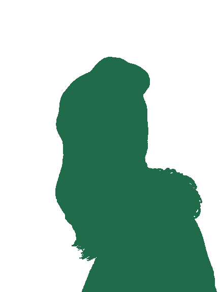

Wie bim Tom Turbo — nume dass da Räder de Sonderfunktione sind.

Bliibt ruehig, wenn's brennt
Kontert schneller als du tippsch
Löst sofort us, Fluchtreflex inklusive
Erkennt Chaos uf 20 Meter
Einmal Zabka, immer Zabka
Chli, aber täglich in Betrieb
Koffer parat, 3 Wuche vorher
Läuft au no bi 2000 Höhemeter
Vo Buech bis Techno-Floor
Kurz gseit: es hochkomplexs System us Härz, Humor und Hygiene-Wahn — und geng verlässlich unterwegs.